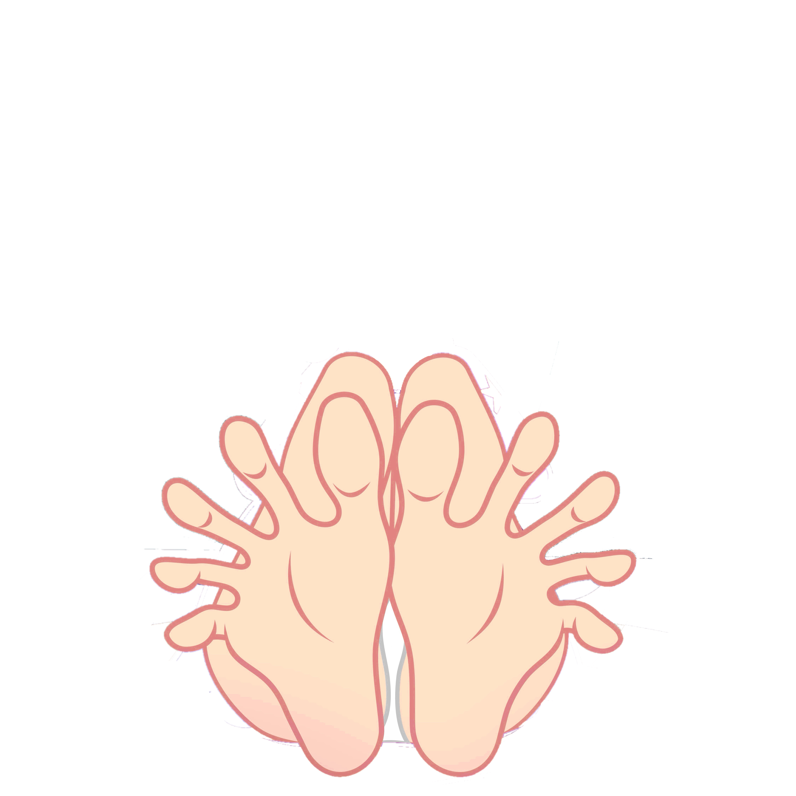

<!doctype html><meta charset="utf-8"><meta name="viewport" content="width=device-width,initial-scale=1,viewport-fit=cover"><title>2df Trace Editor</title><style>body{margin:0;background:#111;color:#eee;font-family:system-ui}main{max-width:900px;margin:auto;padding:12px}.stage{position:relative;width:100%;aspect-ratio:1;background:#000;touch-action:none}.stage>*{position:absolute;inset:0;width:100%;height:100%;object-fit:contain}canvas{pointer-events:auto}button,select{padding:10px;margin:4px;background:#333;color:#fff;border:0;border-radius:8px}.bar{margin:10px 0}.active{outline:2px solid #7dd}small{color:#aaa}</style><main><h1>2df Component Trace Editor</h1><small>Select a component, then tap around its visible boundary. This creates normalized source coordinates. Close the path when finished.</small><div class="stage" id="stage"><canvas id="c"></canvas></div><div class="bar"><select id="part"><option>leftFoot</option><option>rightFoot</option><option>leftToe1</option><option>leftToe2</option><option>leftToe3</option><option>leftToe4</option><option>leftToe5</option><option>rightToe1</option><option>rightToe2</option><option>rightToe3</option><option>rightToe4</option><option>rightToe5</option></select><button id="undo">Undo</button><button id="close">Close path</button><button id="new">New path</button><button id="export">Copy JSON</button></div><small id="status"></small></main><script>
const stage=document.querySelector('#stage'),c=document.querySelector('#c'),x=c.getContext('2d'),part=document.querySelector('#part'),status=document.querySelector('#status');let traces={},current=[];
function resize(){let r=stage.getBoundingClientRect(),d=devicePixelRatio;c.width=r.width*d;c.height=r.height*d;x.setTransform(d,0,0,d,0,0);draw()}new ResizeObserver(resize).observe(stage);
function draw(){let r=stage.getBoundingClientRect();x.clearRect(0,0,r.width,r.height);for(const [name,t] of Object.entries(traces))paint(t.points,name===part.value?'#7dd':'#f90');paint(current,'#fff');function paint(a,col){if(!a.length)return;x.strokeStyle=col;x.fillStyle=col;x.lineWidth=2;x.beginPath();a.forEach((p,i)=>i?x.lineTo(p.x*r.width,p.y*r.height):x.moveTo(p.x*r.width,p.y*r.height));x.stroke();a.forEach(p=>{x.beginPath();x.arc(p.x*r.width,p.y*r.height,4,0,7);x.fill()})}}
stage.onpointerdown=e=>{let r=stage.getBoundingClientRect();current.push({x:+((e.clientX-r.left)/r.width).toFixed(6),y:+((e.clientY-r.top)/r.height).toFixed(6)});status.textContent=part.value+': '+current.length+' points';draw()};
undo.onclick=()=>{current.pop();draw()};close.onclick=()=>{if(current.length<3)return;traces[part.value]={closed:true,points:current};current=[];status.textContent=part.value+' saved';draw()};new.onclick=()=>{current=[];draw()};
part.onchange=()=>{current=[];draw()};export.onclick=async()=>{let s=JSON.stringify({source:'SI_86343F68-B918-496A-8BA4-D5D6AD2F492C.png',components:traces},null,2);try{await navigator.clipboard.writeText(s);status.textContent='JSON copied'}catch{prompt('Copy:',s)}};
resize();
</script>